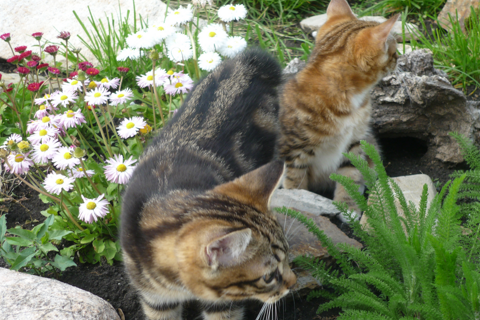

Питомник "TorgodCats" был организован в 2013 году. Первые животные привезены из Самары и Новосибирска. Питомник специализируется на разведении курильских бобтейлов мраморных окрасов.
Все животные привиты, здоровы, отлично социализированы. Проживают вместе с нами в квартире. Если вы решите приобрести себе друга, наши котята станут отличными компаньонами.
Осуществляем отправку в другие города. Сейчас наши питомцы проживают по всей стране, от Новосибирска до Владикавказа.
г. Ессентуки
т. 8-961-492-6318
email: lenamax70@mail.ru
Заводчик - Маскайкина Елена